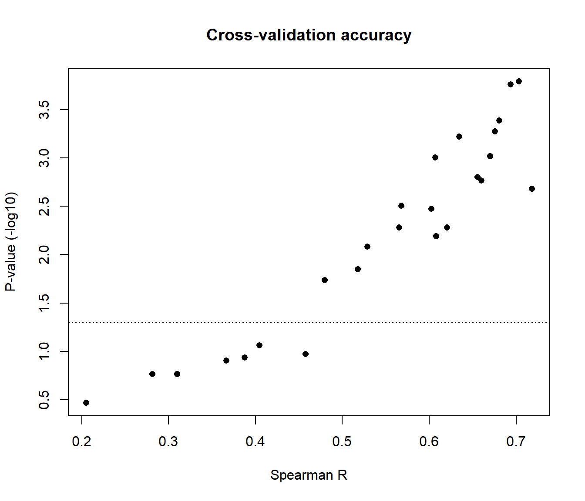
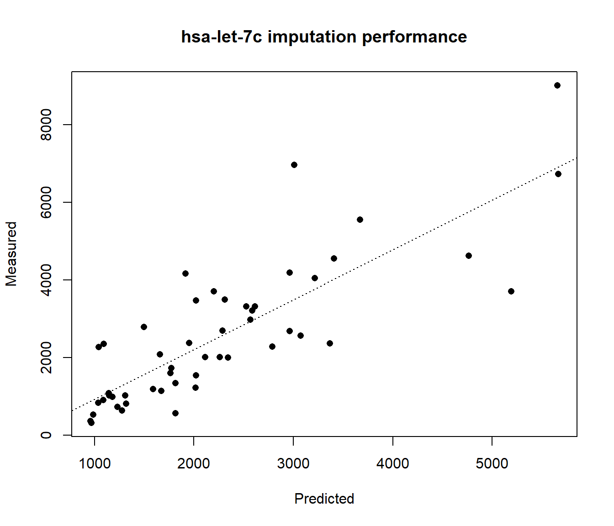
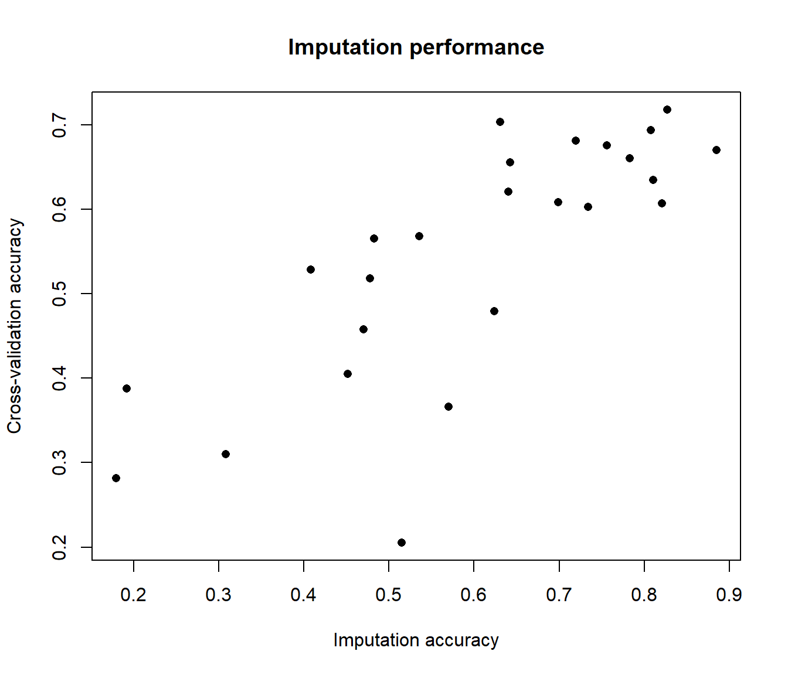
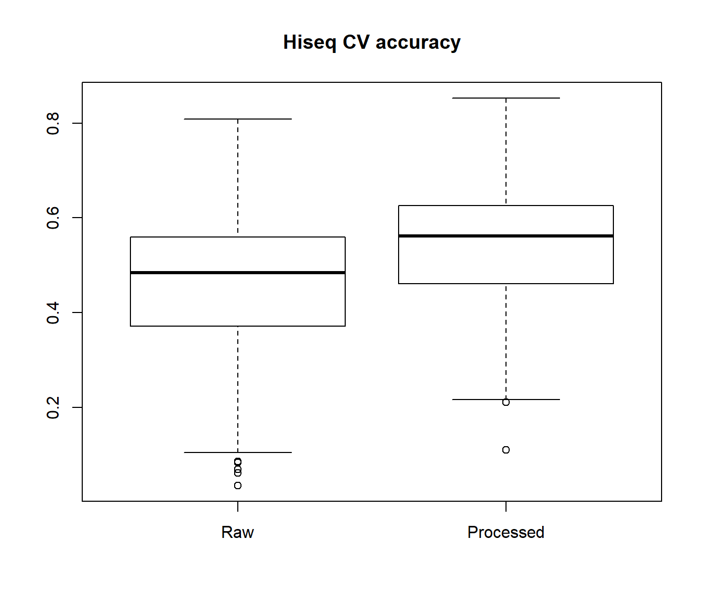

imirage.RmdiMIRAGE stands for imputed microRNA (miRNA) activity from gene expression. As the name suggests, the package imputes expression of miRNAs by constructing prediction models that only depend on the expression levels of protein-coding genes. In essence, iMIRAGE package can impute the miRNA profiles of samples where protein-coding expression data is available (for example, from microarray or RNA-seq), but do not contain reliable miRNA expression. By utilizing a training data set containing both protein-coding and miRNA expression profiles, iMIRAGE constructs prediction models using machine-learning to impute miRNA profiles of the independent (test) data set of interest.
The iMIRAGE package also provides tools to create an integrated workflow, to harmonize, clean-up, normalize and standardize the expression data sets. In addition, the package provides an option of using miRNA-target gene pair information to construct the prediction models
The iMIRAGE package for R can be downloaded from the GitHub repository:
#Download package from GitHub using devtools
devtools::install_github("aritronath/iMIRAGE")#Load the package in R
library(iMIRAGE)
#> Loading required package: randomForest
#> randomForest 4.6-14
#> Type rfNews() to see new features/changes/bug fixes.
#> Loading required package: FNN
#> Loading required package: e1071The iMIRAGE package includes necessary functions for pre-processing and harmonization of expression data sets, miRNA expression imputation and cross-validation analyses. In addition, TargetScan miRNA-target gene pairs are provided for constructing imputation models. The package also includes the example data sets that are used in this vignette.
In this example, we will use the two independent miRNA data sets that were derived from the Cancer Genome Atlas (TCGA) Breast Cancer (BRCA) project. These data sets are automatically available when the iMIRAGE package library is loaded.
The prefix HS refers to TCGA BRCA samples for which miRNA mature strand expression were obtained using the Illumina Hiseq system.
The samples in the two data sets are mutually exclusive. The small subset included in these example data sets were randomly selected
Note: the complete TCGA BRCA HiSeq and GA data sets can be downloaded from the XENA portal
match.gex
# return a pair of matrices with matched columns (protein-coding genes that will be used as training features)
temp <- match.gex(GA.pcg, HS.pcg)
GA.pcg <- temp[[1]]
HS.pcg <- temp[[2]]imirage.cv to determine the expected accuracy of imputing a miRNA of interest using the training datasets#Use **imirage.cv** with the default parameters of using K-nearest neighbors as the prediction algorithm and using 50 protein-coding genes as training features
CV.miRNA <- imirage.cv(train_pcg=GA.pcg, train_mir=GA.mir, gene_index="hsa-let-7c", method="KNN", target="none")
#>
#> Running 10-folds cross-validation...
#> Iteration 1
#> Iteration 2
#> Iteration 3
#> Iteration 4
#> Iteration 5
#> Iteration 6
#> Iteration 7
#> Iteration 8
#> Iteration 9
#> Iteration 10
#> Cross-validation complete
#Print the accuracy metrics from each fold of the cross-validation analysis
print(CV.miRNA)
#> PCC P-Value RMSE
#> [1,] 0.6421569 6.652233e-03 1607.9770
#> [2,] 0.7203907 3.688712e-05 1369.3719
#> [3,] 0.6840176 2.602183e-05 1467.2613
#> [4,] 0.6628352 1.744676e-04 1824.5160
#> [5,] 0.7235963 4.309439e-06 1898.4681
#> [6,] 0.7512333 5.235529e-08 1811.2824
#> [7,] 0.6729700 7.005981e-05 2697.4273
#> [8,] 0.7908907 9.076999e-08 2199.1467
#> [9,] 0.6849761 2.467588e-07 827.1981
#> [10,] 0.7393048 2.451796e-06 1376.7202
#note: this example performs cross-validation analysis for 1 unique miRNA, hsa-let-7c. The name must match with one of the names in the train_mir object's column namesimirage.cv.loop to determine the expected imputation accuracy of entire miRNA dataset with#Perform cross-validation analysis over the entire training dataset
CV.full <- imirage.cv.loop(train_pcg = GA.pcg, train_mir = GA.mir, method = "KNN", target="none")
#Plot some performance metrics from cross-validation analysis
plot(CV.full[,1], -log10(CV.full[,2]), xlab="Spearman R", ylab="P-value (-log10)", pch=16, main="Cross-validation accuracy")
abline(h=-log10(0.05), lty=3)
#Find out which miRNAs are imputed with good accuracy
colnames(GA.mir)[which(CV.full[,1] > 0.5)] #arbritarily, Spearman correlation > 0.5
#> [1] "hsa-let-7c" "hsa-mir-100" "hsa-mir-10b" "hsa-mir-1301"
#> [5] "hsa-mir-1307" "hsa-mir-130b" "hsa-mir-141" "hsa-mir-150"
#> [9] "hsa-mir-17" "hsa-mir-18a" "hsa-mir-190b" "hsa-mir-20a"
#> [13] "hsa-mir-210" "hsa-mir-301a" "hsa-mir-3677" "hsa-mir-4772"
#> [17] "hsa-mir-99a"
colnames(GA.mir)[which(CV.full[,2] < 0.05)] #P-value < 0.05
#> [1] "hsa-let-7c" "hsa-mir-100" "hsa-mir-10b" "hsa-mir-1301"
#> [5] "hsa-mir-1307" "hsa-mir-130b" "hsa-mir-141" "hsa-mir-150"
#> [9] "hsa-mir-155" "hsa-mir-17" "hsa-mir-18a" "hsa-mir-190b"
#> [13] "hsa-mir-20a" "hsa-mir-210" "hsa-mir-301a" "hsa-mir-3677"
#> [17] "hsa-mir-4772" "hsa-mir-99a"imirage in the test dataset#Use **imirage** with default parameters
Pred.miRNA <- imirage(train_pcg=GA.pcg, train_mir=GA.mir, my_pcg=HS.pcg , gene_index="hsa-let-7c", target="none")
#Display the predicted miRNA expression values
print(Pred.miRNA)
#> [1] 2019.3563 1498.5680 1771.0472 2525.3074 3406.9625 1813.6320 3009.6051
#> [8] 2198.6933 3072.8239 1307.7639 2962.8586 1277.5310 2258.6073 2110.7417
#> [15] 5194.3184 2963.7463 1765.5263 3669.1882 1952.3878 3368.4370 1316.7190
#> [22] 2017.3545 1671.8867 5657.6180 1037.8135 3214.5502 5665.0500 1815.9127
#> [29] 2612.9871 2567.6086 2341.5214 2787.6283 2312.1913 1230.4309 2020.4602
#> [36] 969.7257 1145.1208 958.9258 1043.2435 1181.7525 1092.2694 2585.8381
#> [43] 4762.9124 1914.3931 1659.7709 2286.6204 1590.2248 987.3592 1146.6056
#> [50] 1086.8198
#Compare the predicted miRNA expression values with measured expression
plot(Pred.miRNA, HS.mir[,"hsa-let-7c"], xlab="Predicted", ylab="Measured", main="hsa-let-7c imputation performance", pch=16)
abline(lm(HS.mir[,"hsa-let-7c"] ~ Pred.miRNA), lty=3)
imirage to impute expression of all miRNAs available in the training dataset#Create an empty matrix to store imputed expression
Pred.full <- matrix(data=NA, ncol=ncol(GA.mir), nrow=nrow(HS.pcg))
#Execute a loop to impute each miRNA using the test protein coding dataset
for (i in 1:ncol(GA.mir)) {
Pred.full[,i] <- imirage(train_pcg = GA.pcg, train_mir = GA.mir, my_pcg = HS.pcg, gene_index = i, method="KNN", target="none")
}Find out how well can we impute miRNA expression in the independent data set
#Obtain correlation coefficients between imputed and measured miRNA expression
Pred.Cors <- array(dim=ncol(GA.mir))
for (i in 1:ncol(GA.mir)) {
Pred.Cors[i] <- cor(HS.mir[,i], Pred.full[,i], method="spearman")
}
#Plot imputation correlations in comparison to cross-validation results
plot(Pred.Cors, CV.full[,1], xlab="Imputation accuracy", ylab="Cross-validation accuracy", main="Imputation performance", pch=16)
The principle behind iMIRAGE can be explained in a simplified form by stating the problem in the form of a linear model. Let us assume the user wants to obtain miRNA expression using their protein-coding data set which we will call test. To impute the miRNA expression using the test protein-coding data set, we first determine the mathematical relation between the expression of a set of miRNAs Y with the set of protein-coding gene expression X of the training data set, where p indicates the number of protein-coding genes used in the model. This number can range anywhere from 1 to P, where, P = total number of protein-coding genes available in both the training and test data sets.
\(Y^{Training} = \sum_{i=1}^{p} \beta X_{i}^{Training} + \epsilon\)
The objective of iMIRAGE is to determine \(\beta\) so that it can be harnessed to predict the expression of miRNA Y by applying the model to the test protein-coding data set:
\(Y^{Predicted} = \sum_{i=1}^{p} \beta X_{i}^{Test}\)
(Note that the machine-learning algorithms that are used iMIRAGE are not necessarily based on the assumption of linearity. This is only for simplified illustration purposes)
iMIRAGE assumes that not all protein-coding genes are meaningful for constructing imputation models. Therefore, it suggests using a subset of informative protein-coding genes for each miRNA. These informative features are automatically determined by calculating the correlation between the expression of all features with miRNA expression in the training data sets. Then, only a user-specified subset of the top correlated features are retained for constructing the models (by default 50).
Protein-coding gene expression data from the independent samples of interest. In the package documentation, this data set is referred by its alias my_pcg
Ideally, the training dataset should be of the same tissue-type as the independent test dataset. However, large datasets spanning multiple tissues can also be used. For example, the pan-cancer TCGA cohort covering more than 30 tissue-types can be used as training data to predict miRNA profiles of various individual cancers.
#Short example on converting RefSeq mRNA IDs to ENSEMBL IDs using biomaRt
library(biomaRt)
ensembl = useMart("ensembl",dataset="hsapiens_gene_ensembl")
old.ids <- colnames(my_pcg) #RefSeq IDs
gene.annot <- getBM(attributes=c('refseq_mrna','ensembl_gene_id'),
filters = 'refseq_mrna',
values = as.character(old.ids),
mart = ensembl)
#returns a dataframe with ENSEMBL IDs corresponding to supplied RefSeq mRNA IDsSee the biomaRt documentation for complete details and instructions
We will use the unprocessed TCGA BRCA data sets to illustrate a typical workflow. The data set used in the subsequent examples can be downloaded from the Open Science Framework repository by following the following URL: https://osf.io/s5rbn/download
After downloading the TCGA_BRCA_Datasets.RData file in the current working directory, load the contents using
load("TCGA_BRCA_Datasets.RData")The following four matrices should appear after the object is loaded: ga.gex, ga.mirna, hiseq.gex, hiseq.mirna
filter.expto remove gene or miRNAs that are not expressed in most samples using (optional)We first remove gene or miRNAs that are not expressed in most samples, as these genes are likely not measured due to technical limitations and may not be reliable expression estimates. Ultimately, it is up to the user to decide whether they would like to include the sparse genes or miRNA in their analyses.
#Here, we filter the miRNA datasets to retain all miRNAs that are expressed above a level of 0 in atleast 75% of the samples
ga.mirna <- filter.exp(ga.mirna, cutoff=75, threshold = 0)
hiseq.mirna <- filter.exp(hiseq.mirna, cutoff=75, threshold = 0)match.gex to match training and test protein-coding expression matrices (required)Here, we match the two protein-coding expression matrices for subsequent processing
#We also will keep the unprocessed hiseq.gex.1 and ga.gex.1 datasets for subsquent comparisons
temp <- match.gex(hiseq.gex, ga.gex)
hiseq.gex.1 <- temp[[1]]
ga.gex.1 <- temp[[2]]
#For subsquent prediction analyses, we will also select miRNAs are common to both datasets
temp <- match.gex(ga.mirna, hiseq.mirna)
ga.mirna.1 <- temp[[1]]
hiseq.mirna.1 <- temp[[2]]pre.process training and test datasets (optional, recommended)In this step, we process the training and test data sets using pre.process to make sure they are transformed, normalized and standardized before proceeding with further analysis. These steps tend to have a significant impact on subsequent analyses.
Generally, the user should determine whether their data has been transformed (\(\log2\) or \(\log2(x+1)\)) or normalized from the original source. In most cases, microarray data sets in public domain, such as NCBI GEO or ArrayExpress, are already transformed and normalized. However, several RNA-seq data sets may be available prior to transformation and normalization. In these instances, it is advisable to perform log transformation and upper-quantile normalization prior to use in the workflow.
In addition, the variance filter removes genes with zero variance that will offer no predictive power. Finally, the data is scaled to a mean = 0 and standard deviation = 1. These are bare-minimum standardization techniques which can be skipped if the user has already pre-processed their data using other approaches.
ga.gex.2 <- pre.process(ga.gex.1, log = TRUE, var.filter = TRUE, UQ = TRUE, std = TRUE)
hiseq.gex.2 <- pre.process(hiseq.gex.1, log = TRUE, var.filter = TRUE, UQ = TRUE, std = TRUE)
#This is how the data looks before and after pre.processing (showing the first 10 samples from each dataset)
par(mfrow=c(2,2), cex=0.75)
boxplot(t(ga.gex.1[1:10,]), main="GA - raw expression")
boxplot(t(ga.gex.2[1:10,]), main="GA - processed expression")
boxplot(t(hiseq.gex.1[1:10,]), main="Hiseq - raw expression")
boxplot(t(hiseq.gex.2[1:10,]), main="Hiseq - processed expression")Here, we will first find out which miRNAs can be imputed with good accuracy using the GA data set as our training data set. The imirage.cv function performs a 10-fold cross-validation analysis for a single miRNA specified by the gene_index argument, as shown in the quick start guide above. In addition, the imirage.cv.loop wrapper can be used to perform the cross-validation analysis on the entire training miRNA data set.
The cross-validation analysis can be performed using one of the three methods: K-nearest neighbor regression (KNN), Random Forests (RF) or Support Vector Machines (SVM). These can be specified using the method argument.
For further details on the arguments that can be passed on the machine-learning methods, please see the documentation for randomForest, e0171 and FNN packages.
By default, the number of training features that are used by each method are set at 50. This can adjusted by the user using the num argument to achieve a balance between desired imputation accuracy and computational costs.
Additionally, the “K”" or number of cross-validation iterations can be set using folds, which set at 10 by default.
Here, we perform a 10-fold cross-validation analysis using the entire GA training data sets using KNN method. We perform the analysis with both the processed and unprocessed GA protein-coding data for comparison
#Unprocessed training data
CV.ga.gex1 <- imirage.cv.loop(train_pcg = ga.gex.1, train_mir = ga.mirna.1, method = "KNN", target="none")
#Processed training data
CV.ga.gex2 <- imirage.cv.loop(train_pcg = ga.gex.2, train_mir = ga.mirna.1, method = "KNN", target="none")
#Unprocessed training data
CV.hs.gex1 <- imirage.cv.loop(train_pcg = hiseq.gex.1, train_mir = hiseq.mirna.1, method = "KNN", target="none")
#Processed training data
CV.hs.gex2 <- imirage.cv.loop(train_pcg = hiseq.gex.2, train_mir = hiseq.mirna.1, method = "KNN", target="none")
#Comparison of imputation accuracies between raw and processed data
boxplot(CV.ga.gex1[,1], CV.ga.gex2[,1], names=c("Raw", "Processed"), main="GA CV accuracy")
Subsequently, the user can either select the miRNAs with good performance metrics in cross-validation analysis or perform the imputation using the full training data set with imirage. Generally, poor cross-validation metrics are a good indicator that the miRNA can be safely excluded from the prediction analysis in the independent test data set.
sessionInfo()
#> R version 3.6.1 (2019-07-05)
#> Platform: x86_64-w64-mingw32/x64 (64-bit)
#> Running under: Windows 10 x64 (build 18362)
#>
#> Matrix products: default
#>
#> locale:
#> [1] LC_COLLATE=English_United States.1252
#> [2] LC_CTYPE=English_United States.1252
#> [3] LC_MONETARY=English_United States.1252
#> [4] LC_NUMERIC=C
#> [5] LC_TIME=English_United States.1252
#>
#> attached base packages:
#> [1] stats graphics grDevices utils datasets methods base
#>
#> other attached packages:
#> [1] iMIRAGE_1.1 e1071_1.7-2 FNN_1.1.3
#> [4] randomForest_4.6-14
#>
#> loaded via a namespace (and not attached):
#> [1] Rcpp_1.0.1 rstudioapi_0.10 knitr_1.23 xml2_1.2.0
#> [5] magrittr_1.5 roxygen2_6.1.1 MASS_7.3-51.4 R6_2.4.0
#> [9] rlang_0.4.0 stringr_1.4.0 tools_3.6.1 xfun_0.8
#> [13] class_7.3-15 htmltools_0.3.6 commonmark_1.7 yaml_2.2.0
#> [17] digest_0.6.20 assertthat_0.2.1 rprojroot_1.3-2 pkgdown_1.3.0
#> [21] crayon_1.3.4 fs_1.3.1 memoise_1.1.0 evaluate_0.14
#> [25] rmarkdown_1.14 stringi_1.4.3 compiler_3.6.1 desc_1.2.0
#> [29] backports_1.1.4